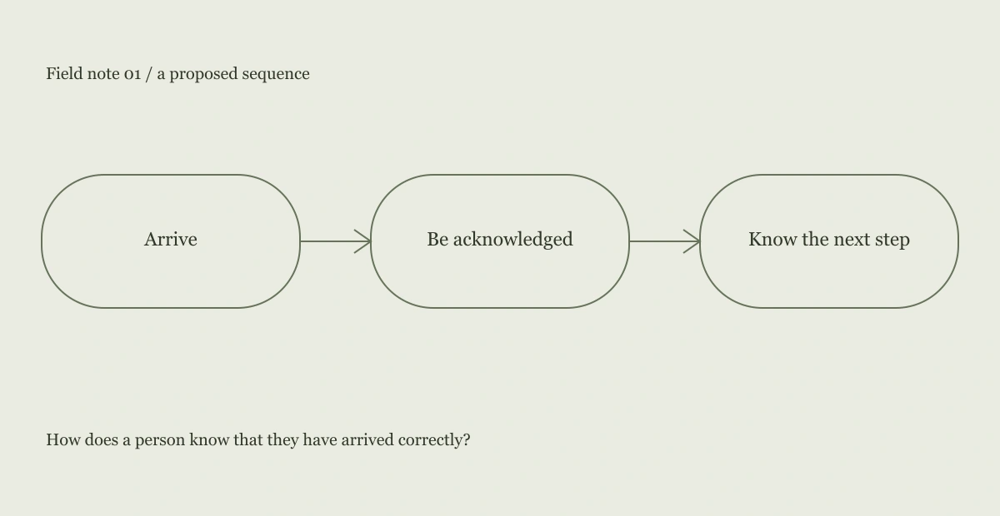

How does a person know that they have arrived correctly?
The scene
The fictional scene contains a door, a reception desk, several chairs and a sign asking visitors to wait. The sign explains the action but not the state. A person can follow it perfectly and still wonder whether the appointment has been registered. That uncertainty is the starting point of the study.
An interpretation
The missing information is not another instruction. It is acknowledgment. A visible arrival confirmation could reduce ambiguity without asking the visitor to interrupt the person at the desk. The confirmation should name the next step and avoid exposing other visitors’ details.

A design proposal
The design proposal is a small arrival card: “You’re in the right place. Please take a seat; we’ll call your first name.” It is paired with a clear place to ask for help. The card is an interface sketch, not a claim that a sign alone can resolve every problem in a service environment.
What this does not establish
No participants were observed or interviewed for this concept. The scene is fictional and used to reason about information states. A real study would need consent, an appropriate setting and attention to language, access needs and the actual service process.
The next question
I would ask whether visitors can explain what will happen next in their own words. I would also look for cases where the proposed acknowledgment is misleading, such as a delayed appointment or a person who cannot hear their name being called.